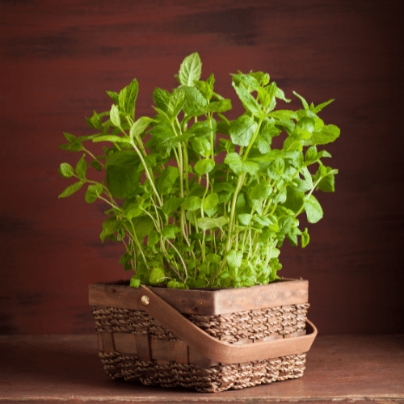
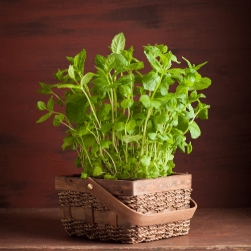

Herbs and Spices
herb
/(h)ərb/
noun
plural noun: herbs
Any plant with leaves, seeds, or flowers used for flavoring, food, medicine, or perfume e.g. basil, roses, rosemary, chamomile, fennel.
spice
/spīs/
noun
plural noun: spices
An aromatic or pungent plant substance related to the roots, twigs, bark and berries used to flavor food and create medicine e.g. cloves, pepper, cinnamon or cumin.
Ashwagandha Root (withania somnifera):
Ashwagandha root, also known as Indian Ginseng, Winter Cherry, or Ashgand. This wonderful plant I like to call a powerhouse plant because it has so many benefits it might be hard to list them all. The part of the plant that is used is the root. This plant is an antispasmodic, sedative, anti-inflammatory, astringent, adaptogenic, nervine, and diuretic. Adaptogenic plants help your body deal with stress, anxiety, and fatigue and this plant is a great adaptogen. Traditionally this plant is used for anxiety, depression, anemia, libido booster, immune booster, inflammation, infections, stress reducer, fibromyalgia, cancer fighter, reduces blood pressure, balance glucose levels in diabetics, protects the brain and improves cognitive function. Now after reading all that this wonderful plant can do, can you now see why it is a powerhouse plant? DO NOT USE IF PREGANT OR NURSING. DO NOT USE IF YOU HAVE A STOMACH ULCER.
Boneset (eupatorium perfoliatum):
Boneset is also known a Feverwort. The flowers and leaves are used in their dried state instead of fresh. Boneset is an immune-stimulant, diaphoretic, anti-inflammatory, bitter(aids liver), muscle relaxant, antibacterial, antiviral, circulatory stimulant, and an analgesic. It is used for fever, chills, and pain in joints and bones associated with the flu virus and common cold. It loosens phlegm, treats dengue fever, malaria, staph, pneumonia, and stimulates the production of white blood cells to fight off infections in the body. DO NOT USE BONESET IF YOU ARE ON ANY KIND OF BLOOD THINNERS.
Chamomile (chamomilla resutitai):
Chamomile is this beautiful little flower from the daisy family. It has little white petals and a bright yellow center. When using this, the flower is what you would pluck and dry. The medicinal properties for this wonderful flower are as a nervine, anti-spasmodic, carminative, emmenagogue, analgesic, antiseptic, anti-inflammatory, and vulnerary. This delicate little flower is used to treat a spastic colon, nightmares, hyperactivity, gas and digestive pain, aching muscles, eyestrain, anxiety, insomnia, and restlessness. What a wonderful herb to calm the nerves!

Dandelion (taraxacum officinale):
Dandelion is also known as Cankerwort, Lions Tooth and Swine Snout. Commonly known as a weed, this little plant can pack a punch. The parts of this plant that are used are the leaves and root when dried. This plant is a bitter plant, so it is great for the liver to clean the blood. Medicinal properties are as an alterative, diuretic, anti-rheumatic, hepatic, galactagogue, stomachic, and a mild laxative. You can use it for fluid retention, blood cleansing, cholesterol, high blood pressure, menopause, hepatitis, diabetes, hypoglycemia, tonic-(strengthens and cleanses the liver, gallbladder and kidneys). It is used in weight loss and bladder health as well. Use this plant with caution when dealing with gallstones.

Echinacea (E. purpurea, angustofolia, E. pallida):
Echinacea is also known as the Purple Cornflower. This plant is a must have in your medicinal cabinet. All parts of this plant are used to heal the body. The medicinal properties of this purple little flower are anti-microbial, immune stimulant, anti-bacterial, anti-viral, anti-fungal, anti-allergic, diaphoretic, alterative, and detoxifier. You would commonly use this plant when dealing with viral infection like cold and flu, fungal infections, building your immune system, allergies and asthma. It does wonders for earaches and ear infections, bites and stings, sore throats and even skin problems like acne and boils. Can be used to aid the kidneys, bladder and prostrate. You can even use it to help with vaginal infections in a douche. The use of it to help with poison oak is also in its repertoire.

Garlic (allium sativum):
What a sad world it would be without the garlic plant. Not only is garlic an amazing flavor for our favorite savory meals, it is also very beneficial medicinally. The bulb is the part of the plant that you would use. Almost all systems of the body are affected by this little wonder. The medicinal properties are a mile long and is anti-everything from anti-fungal to antispasmodic. The biggest power punch this little plant gives is though its ability to strengthen the immune system. It is used to fight all infections, cancer prevention, heart disease and high cholesterol. Colds, flu and sinus infections are on its list. Parasites and shingles, strep and tonsilitis, pneumonia, candida, dysentery, and herpes. With this long list of things that it can heal, the thing that I used it the most for is ear infections. Kids and their ear infections was my life for quite sometime.

Peppermint (mentha piperita):
Who doesn’t love peppermint? Well, when you find out what it can do, you might find that you can’t live without it. Peppermint leaves and its essential oil work wonders for your body. It is an antiseptic in oil form, antispasmodic, analgesic, antifungal, tonic, relaxant, antibacterial, decongestant, aromatic and nervine. It is full of calcium, iron, magnesium, potassium, vitamin A, B3 and C. It is used for gas, IBS, spastic colon, constipation, diarrhea, bloating, headaches, respiratory infections as an inhalant or chest rub. It relieves nausea and stimulates digestive juices. Mothers can use it to aid colic through their breast milk. This is a must have in my kitchen!
 

Yarrow (achillea millefolium):
Don’t let this beautiful plant with its tiny little flowers trick you. It is a powerful plant that aided on the battlefield many times which got it the nick name Soldiers Woundwort. Yarrow is a must for your medicine cabinet for the immune system, circulatory system and digestive system. It is a diaphoretic, hypotensive, astringent, diuretic, demulcent, anti-spasmodic, anti-inflammatory, and a bitter herb (aids the liver). You would use this plant to stop bleeding (internal and external), reduce fevers, colds and flu, sore throat, burns, hemorrhoids, arthritis, digestive infections, varicose veins, regulates menses, restores kidney and liver functions, improves circulation, douches and even neutralizes oily skin. Wow! What a plant!